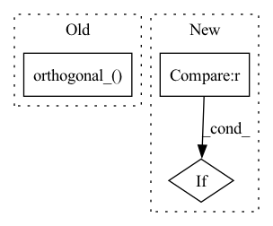

Pattern ID :8617
Before Change
self.actor_logstd = nn.Parameter(torch.zeros(1, action_dim))
for layer in self.modules():
if isinstance(layer, nn.Linear):
nn.init.orthogonal_( layer.weight)
layer.bias.data.zero_()
def forward(self,x):
x = torch.tanh(self.fc1(x))After Change
def __init__(self, layer_num, input_dim, output_dim, hidden_dim, activation_function = torch.tanh,last_activation = None, trainable_std = False):
super(Actor, self).__init__(layer_num, input_dim, output_dim, hidden_dim, activation_function ,last_activation)
self.trainable_std = trainable_std
if self.trainable_std == True :
self.logstd = nn.Parameter(torch.zeros(1, output_dim))
def forward(self, x):
mu = self._forward(x)In pattern: SUPERPATTERN
Frequency: 3
Non-data size: 3
Instances Fragment ID: 29973135
Project Name: seolhokim/mujoco-pytorch
Commit Name: 0ce335459ae78887c789686fc20f23c207637d14
Time: 2021-05-12
Author: kilmya1@naver.com
File Name: networks/network.py
M Class Name: Actor
N Class Name: Actor
M Method Name: __init__(8)
N Method Name: __init__(4)
M Parent Class: Network
N Parent Class: nn.Module
M File Name: networks/network.py
N File Name: networks/network.py
M Start Line: 6
M End Line: 18
N Start Line: 8
N End Line: 13
Before Change
).to(device)
// Adding orthogonal initialization for recurrent connection
nn.init.orthogonal_( self.u.weight)
// Initializing batch norm
self.bn_w = nn.BatchNorm1d(2 * self.hidden_size, momentum=0.05).to(
deviceAfter Change
)
self.normalize = True
if normalization == "layernorm" :
self.norm = torch.nn.LayerNorm(2 * self.hidden_size).to(device)
self.normalize = True
// Initial state Fragment ID: 29973136
Project Name: speechbrain/speechbrain
Commit Name: 4e3ab8b65b4580a878495359fe3f25cc08f540e8
Time: 2020-05-17
Author: mirco.ravabelli@gmail.com
File Name: speechbrain/nnet/RNN.py
M Class Name: LiGRU_Layer
N Class Name: LiGRU_Layer
M Method Name: __init__(10)
N Method Name: __init__(9)
M Parent Class: torch.jit.ScriptModule
N Parent Class: torch.jit.ScriptModule
M File Name: speechbrain/nnet/RNN.py
N File Name: speechbrain/nnet/RNN.py
M Start Line: 295
M End Line: 324
N Start Line: 319
N End Line: 374
Before Change
if isinstance(module, nn.Linear):
gain_layer = min(3, module.weight.shape[0] / module.weight.shape[1])
depth_factor = 1 // min(1, 1 / math.sqrt(self.config.n_layer / 5))
nn.init.orthogonal_( module.weight, gain = gain_layer * depth_factor)
else:
nn.init.orthogonal_(module.weight, gain = 1.0)
else:
module.weight.data.normal_(mean=0.0, std=0.01)After Change
if self.config.model_type == "RWKV":
gain = 1.0
if isinstance(module, nn.Linear):
if module.weight.data.shape[0] > module.weight.data.shape[1] :
gain = math.sqrt(module.weight.data.shape[0] / module.weight.data.shape[1])
nn.init.orthogonal_(module.weight, gain=gain)
else: Fragment ID: 29973138
Project Name: blinkdl/rwkv-lm
Commit Name: 440bebff1a097d31d2017d4c2ff8421518c0a56b
Time: 2021-08-11
Author: a@a.com
File Name: src/model.py
M Class Name: GPT
N Class Name: GPT
M Method Name: _init_weights(2)
N Method Name: _init_weights(2)
M Parent Class: nn.Module
N Parent Class: nn.Module
M File Name: src/model.py
N File Name: src/model.py
M Start Line: 350
M End Line: 356
N Start Line: 360
N End Line: 364